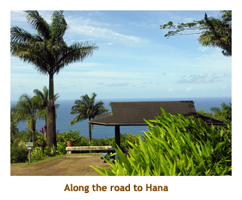

[ Home ] [ Travel ] [ Photography ] [ Pets ] [ Games] [ Rowing] [ Physics ]


Another Wonderful Week on Maui
Travel
Cruises
Past Cruises (Diaries)
Future Cruises
Rogues Galleries
Land Trips
Diaries (Land Trips)
Hawai'i - Big Island - 04'01
Hawai'i - Maui - 05'02
Hawai'i - Big Island - 04'03
Hawai'i - Kaua'i - 09'04
Hawai'i - Big Island - 04'06
Hawai'i - Maui - 04'06
Mainland China - 05'07
Phoenix, Arizona - 12'07
Greek Isles - 05'08
Hawai'i - Kaua'i - 09'08
Hawai'i - Big Island - 09'09
Hawai'i - Maui - 05'12
Hawai'i - Big Island - 04'13
Ireland - 08'13
Mexico - Cancun 11'13
France/Belgium/Lux 07'15
Hawai'i - Big Island - 05'17
England / Wales - 06'17
Hawai'i - Big Island - 09'19
Photography
Cameras
Underwater
Pets
Tara
Blackie
Whitey
Muffy
Ollie
Rusty
Fluffy
Rufus&Dufus
Games
Rowing
Physics
This was the second part of our two week trip to Hawai'i. Mike and I had decided to do a week on the Big Island and then a week on Maui. The Big Island trip is in a separate diary. We had not been to Hana before, so we booked two nights there so that we wouldn't have to drive the Hana road twice in one day. Our inter-island flight from the Big Island got us in around noon. We grabbed lunch at the Subway in Kahului and then headed off along the Hana Highway.
The road is the twistiest I've ever been on. We stopped at a botanical garden along the way. It was nice to walk around for a bit. When we got to the house where we had booked, there was no one there. So, we headed into the town of Hana to look around. In the general store, we asked about the house owners and were told that they had gone to Vegas for a few days. Oh, oh! Returning to the house, people staying in a second unit opened the door for us so that we could move our stuff in. No one ever did meet us at the house. It turned out that the owners had instructed a niece to check us in, etc, but she forgot all about it. Not good!
We bought some groceries and had a meal at the house. Then we went to bed early ready for our day of exploring the area.

We spent the following day exploring the area around the village of Hana. Our room was quite close to a beautiful beach - the Wai'anapanapa Black Sand Beach. In town we visited the Hasegawa General Store that carried everything you could think of, all jumbled together. For lunch we had burgers at Tutu's Snack Shop just across from the beach.
In the afternoon we drove south from Hana and visited the "seven sacred pools".
I read up on the pools and they were named strictly to attract tourists - they were
never sacred and there isn't 7 of them!
The next day we dreove back along the Hana Highway to our next accomodation
in Hanakowai at the Hoyochi Nikko. We had no trouble getting into our room! The
condo was excellent. The next day we did the Maui Ocean Center and the Whaler's
Village. For an evening treat we saw the "Ulalena" musical show in Lahaina.
Wonderfiul show.. The following day we did Haleakala.
It was a really great week on Maui.